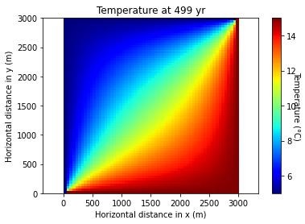
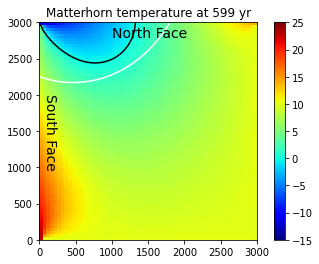

Exercices 7#
Exercise : Evolution du permafrost au Cervin#
Pour un premier exercice en deux dimensions, nous allons modéliser l’évolution de la température au sein du Cervin (coupe nord-sud) sous l’effet du réchauffement climatique. L’augmentation des températures en haute montagne est particulièrement problématique pour la stabilité des pentes et falaises dont la cohésion dépend de la présence de glace. Dans cet exercice, nous allons augmenter la température des flancs du Cervin (auparavent en équilibre thermique) et observer la migration de la limite du permafrost (et de fait l’étendue des pentes destabilisées).

1. Modèle élémentaire#
Avant de s’attaquer au Cervin, nous allons faire un modèle élémentaire dans un simple carré.
Le point clé de ce problème est de résoudre la diffusion dans un domaine en deux dimensions (2D), rectangulaire (Figure ci-dessous). L’évolution du champ de température \(T\) qui se diffuse en deux dimensions (\(x\) et \(y\)) est décrit par deux flux (\(x\) et \(y\)) qui se combinent dans le taux de changement:
et
Nous commençons par modéliser l’évolution du champs de température dans un rectangle dont les paramètres (y compris les conditions initiales et de bords) sont donnés dans la Table. La matrice des températures peut être affichée avec ax.imshow comme dans la figure suivante.

*L’équilibrage de la diffusion de température en deux dimensions sur un rectangle simple, ici avec des valeurs de conditions limites de 5°C et 15°C respectivement.”
Paramètres#
Paramètres |
Valeurs |
|---|---|
Longueur x |
3000 m |
Longueur y |
3000 m |
Température initiale |
10°C |
Diffusivité |
3500 m²/yr |
Nombre de cellules nx |
60 |
Nombre de cellules ny |
70 |
modèle élémentaire: |
|
Température bord gauche |
5°C |
Température bord droite |
15°C |
Température bord haut |
5°C |
Température bord bas |
15°C |
Temps total |
500 yr |
✅ À vous de faire !#
import numpy as np
import matplotlib.pyplot as plt
from IPython.display import display, clear_output
# Physics
D = 3500.0 # diffusivity (m^2/y)
Lx = 3000.0 # length model in x (m)
Ly = 3000.0 # length model in y (m)
T0 = 10.0 # initial temperature (degC)
ttot = 500.0 # total time, yrs
Tbas = 15.0 # condition bord
Thaut = 5.0 # condition bord
Tgauche = 5.0 # condition bord
Tdroit = 15.0 # condition bord
# Numerics
nx = 60
ny = 70
dx = Lx / (nx - 1)
dy = Ly / (ny - 1)
x = np.linspace(0, Lx, nx)
y = np.linspace(0, Ly, ny)
dt = min(dx, dy)**2 / (D * 4.1)
nt = int(ttot / dt)
nout = 50
# Initialization
T = T0 * np.ones((ny, nx))
fig, ax = plt.subplots()
s = ax.imshow(T, extent=[0, Lx, 0, Ly], origin='lower', cmap='jet')
cbar = plt.colorbar(s)
cbar.set_label("Temperature (°C)", rotation=270)
s.set_clim(5,15)
# Time loop
for it in range(1,nt):
# Compute diffusion
qy = -D * (T[1:, 1:-1] - T[:-1, 1:-1]) / dy
qx = -D * (T[1:-1, 1:] - T[1:-1, :-1]) / dx
dTdt = - ( (qx[:,1:] - qx[:,:-1]) / dx + (qy[1:,:] - qy[:-1,:]) / dy )
T[1:-1, 1:-1] += dTdt * dt # mise a jour de la diffusion
# Boundary condition
T[0, :] = Tbas
T[-1, :] = Thaut
T[:, 0] = Tgauche
T[:, -1] = Tdroit
# Plot temperature field
if it % nout == 0:
clear_output(wait=True) # Clear the output in VS Code
ax.cla()
ax.imshow(T, extent=[0, Lx, 0, Ly], origin='lower', cmap='jet')
plt.gca().set_aspect("auto")
plt.axis('equal')
ax.set_title(f'Temperature at ' + str(int(it * dt)) + ' yr')
ax.set_xlabel('Horizontal distance in x (m)')
ax.set_ylabel('Horizontal distance in y (m)')
display(fig)
2. Modèle réaliste du Cervin#
Afin de modéliser le Cervin simplement, nous réduirons sa géométrie à un carré, qu’il faudra imaginer tourné d’un angle de 45°. Nous reprendrons le code du modèle élémentaire.
Nous créons deux vecteurs de conditions de bord qui représentent les faces nord et sud de la montagne. La température de la face nord va de 10°C au pied de la montagne à -15°C au sommet, et de 15 à -5°C en face sud.
Le modèle tournera d’abord pendant 500 ans pour approcher un équilibre thermique. Puis, le réchauffement des faces sud et nord peut commencer (en modifiant les conditions limites nord et sud uniformément). Une fois que l’équilibrage thermique fonctionne bien, l’affichage des figures peut être limité à la dernière phase de réchauffement (100 ans au total).
Bien que ce modèle soit trés simplifié, il nous permet de constater une dynamique existante dans le massif Alpin. En observant le déplacement de la limite du zéro degré Celsius, nous pouvons nous interroger sur le risque lié à la fonte du pergélisol en milieu alpin, avec les conséquence sur le paysage et la société.
Les valeurs de bord et de réchauffement de la Table ci-dessous ne sont que des suggestions, nous pouvons explorer une myriade de scénarios.
Paramètres |
Valeurs |
|---|---|
modèle réaliste: |
|
Température face nord |
gradient de 10 à -15°C |
Température face sud |
gradient de 15 à -5°C |
Température bords restants |
10°C |
Temps total |
600 yr |
Début du réchauffement |
500 yr |
Réchauffement au nord |
+0.04°C/yr |
Réchauffement au sud |
+0.08°C/yr |

But de l’exercice: Modéliser le géotherme au travers du Matterhorn (sérieusement idéalisé) après 100 ans de réchauffement. Il faut tourner la tête de 45° pour s’imaginer le Matterhorn pointant au ciel.
✅ À vous de faire !#
import numpy as np
import matplotlib.pyplot as plt
from IPython.display import display, clear_output
# Physics parameters
D = 3500 # diffusivity (m^2/y)
Lx = 3000 # length model in x (m)
Ly = 3000 # length model in y (m)
T0 = 10 # initial temperature (degC)
Ntemp = [10, -15] # temperature bounds for the nord norder
Stemp = [15, -5] # temperature bounds for the south norder
Nwarm = 0.04 # North warming rate °C /yr
Swarm = 0.08 # South warming rate C /yr
ttot = 600 # total time
t_chng = 500 # time when warming starts
time = 0 # initial time
BC_T= 10
# Numerics parameters
nx = 60
ny = 70
dx = Lx / (nx - 1)
dy = Ly / (ny - 1)
x = np.linspace(0, Lx, nx)
y = np.linspace(0, Ly, ny)
dt = min(dx, dy)**2 / (D * 4.1)
nt = int(ttot / dt)
flag = 0
# Initialize temperature field
T = np.ones((ny, nx))*T0
# Temperature on North and South borders
BC_N = np.linspace(Ntemp[1], Ntemp[0], nx)
BC_S = np.linspace(Stemp[0], Stemp[1], ny)
# Create a meshgrid for x and y
X, Y = np.meshgrid(x, y)
# Initialize a figure
fig, ax = plt.subplots(dpi=100)
s = ax.imshow(T, origin='lower', extent=(0, Lx, 0, Ly), cmap='jet')
cbar = plt.colorbar(s)
s.set_clim(-15, 25)
# Timeloop
for it in range(nt):
time += dt
# Compute diffusion
qy = -D * (T[1:, 1:-1] - T[:-1, 1:-1]) / dy
qx = -D * (T[1:-1, 1:] - T[1:-1, :-1]) / dx
dTdt = - ( (qx[:,1:] - qx[:,:-1]) / dx + (qy[1:,:] - qy[:-1,:]) / dy )
T[1:-1, 1:-1] += dTdt * dt # mise a jour de la diffusion
# applique un rechauffement apres 500 ans
if time > t_chng:
BC_N = BC_N + Nwarm * dt
BC_S = BC_S + Swarm * dt
# conditions de bords
T[-1, :] = BC_N
T[:, 0] = BC_S
T[0, :] = BC_T
T[:, -1] = BC_T
# Enregiste le champs de temperature a 500 ans
if time > t_chng and flag == 0:
T_orig = np.copy(T)
flag = 1
# plotting
if it % 50 == 0:
clear_output(wait=True) # Clear the output in VS Code
ax.cla()
ax.imshow(T, origin='lower', extent=(0, Lx, 0, Ly), cmap='jet')
if time > t_chng:
ax.contour(X, Y, T_orig, levels=[0], colors='w')
ax.contour(X, Y, T, levels=[0], colors='k')
ax.set_title(f'Matterhorn temperature at {int(time)} yr')
ax.set_xlabel('Horizontal distance in x (m)')
ax.set_ylabel('Horizontal distance in y (m)')
ax.text(50, 1000, 'South Face', fontsize=14, rotation=-90)
ax.text(1000, 2800, 'North Face', fontsize=14)
display(fig)